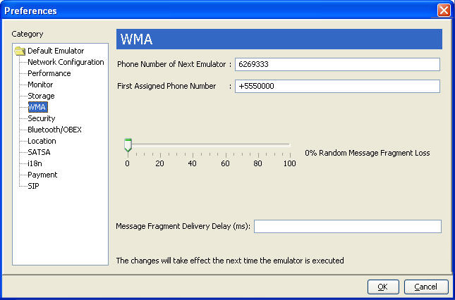
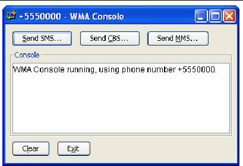
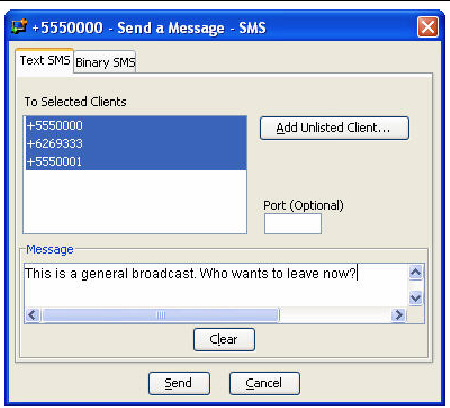
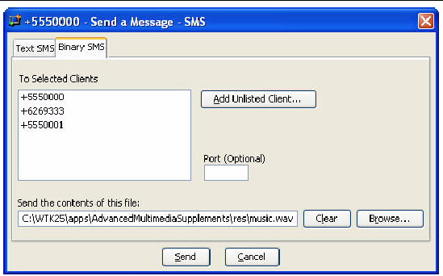
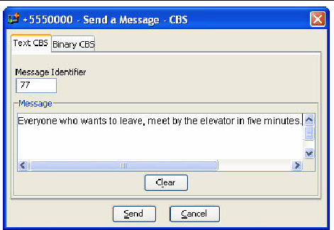
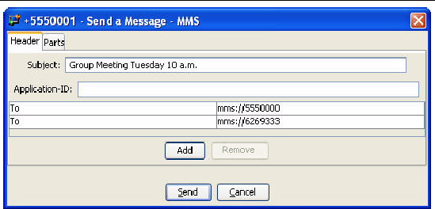
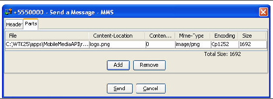
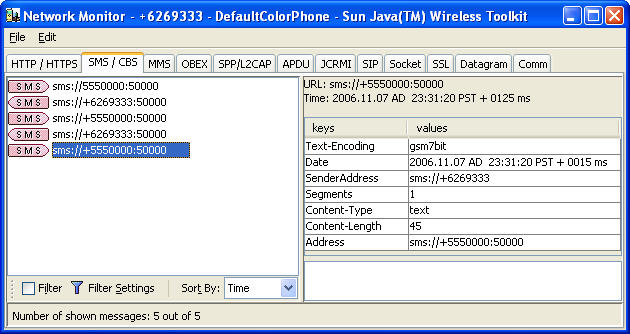

| Sun Java Wireless Toolkit for CLDC User's Guide |
| Sun Java Wireless Toolkit for CLDC User's Guide |
| C H A P T E R 7 |
|
Using the Wireless Messaging API |
The Sun JavaTM Wireless Toolkit for CLDC supports the Wireless Messaging API (WMA) with a sophisticated simulation environment. WMA 1.1 (JSR 120) enables MIDlets to send and receive Short Message Service (SMS) or Cell Broadcast Service (CBS) messages. WMA 2.0 (JSR 205) includes support for MMS messages as well.
This chapter describes the tools you can use to develop WMA applications. It begins by showing how to configure the emulator's support of WMA. Next, it describes the WMA console, a handy utility for testing WMA applications. The chapter concludes with a brief description of the network monitor's WMA support.
Each running instance of the emulator has a simulated phone number that is shown in the title bar of the emulator window. The phone numbers are important because they are used as addresses for WMA messages. By default, the first emulator instance has a phone number of +555000. Subsequent instances of the emulator have unique numbers in ascending order: +5550001, +5550002, +5550003, etc.
You can affect the assigned phone numbers by choosing Edit > Preferences and selecting WMA in the left pane.
FIGURE 7-1 Setting WMA Preferences

The Phone Number of Next Emulator field is just what it sounds like. If you fill in a number for this field, the next emulator instance will have that number.
If the Phone Number of Next Emulator is already in use, or if the field is blank, then the First Assigned Phone Number is used for the next emulator instance. Subsequent instances count up.
For example, for the Phone Number of Next Emulator, suppose you enter +6269333, and for the First Assigned Phone Number you enter +5550000. If you launch four emulator instances, their numbers are +6269333, +5550000, +5550001, and +5550002.
Long messages are sent by splitting them, sending the fragments separately, and reassembling the fragments on the receiving end. You can simulate some of the hazards of the wireless network in the Sun JavaTM Wireless Toolkit for CLDC. As before, choose Edit > Preferences and select WMA.
If you want the toolkit to lose some message fragments, adjust the Random Message Fragment Loss slider to the desired percentage. To simulate a delay between the time message fragments are sent and received, enter the delay in milliseconds in the Message Fragment Delivery Delay field.
The WMA console is a handy utility that enables you to send and receive messages. You can, for example, use the WMA console to send SMS messages to a MIDlet running on the emulator.
To launch the WMA console, choose File > Utilities. Click on WMA Console and press Launch.

To send a text SMS message, click Send SMS The send window appears.
FIGURE 7-3 Sending a Text Message

The window automatically lists the phone numbers of all running emulator instances. Select a destination (Control-click to select multiple destinations) and enter a port number if you wish. Type your message and click Send.
You can use the WMA console to send the contents of a file as a binary message. Click Send SMS to bring up the send window. Click the Binary SMS tab.
FIGURE 7-4 Sending a Binary Message

Selecting recipients is the same as for sending text SMS messages. You can type in the path of a file directly, or click Browse to open a file chooser.
Sending CBS messages is similar to sending SMS messages except that you don't need to choose recipients. To send a text or binary CBS message, click Send CBS in the WMA console. The Send window appears.
FIGURE 7-5 Sending CBS Messages

MMS messages consist of one or more files, usually images or sounds. MMS message can be sent to multiple recipients. To send an MMS message from the WMA console, click the Send MMS button.
The window for composing MMS messages has two tabs, one for recipients and one for content. Begin by filling in a subject and recipient. If you wish to add more recipients, click the Add button. For example, to send a message to a running emulator whose number is +5550001, fill in the To line as mms://+5550001. To remove a recipient, first select its line, then click Remove.
FIGURE 7-6 Adding Recipients for an MMS Message

To add media files to the message, click the Parts tab. Click Add to add a part to the message. To remove a part, select it and press Remove.
FIGURE 7-7 Adding Parts to an MMS Message

The WMA console can also receive messages. The WMA console window has its own phone number in the title bar. You can send messages to the WMA console from your applications running on the emulator.
Received messages are shown in the WMA console's text area.
The network monitor is fully described in Chapter 5. You can use the network monitor to track WMA messages that are sent to or from the emulator.
Click the SMS/CBS or MMS tabs to see WMA messages. Information about the messages and their fragments is shown in the left pane of the network monitor. Click a message or message fragment to see its details in the right pane.
FIGURE 7-8 Using the Network Monitor to View a WMA Message

| Sun Java Wireless Toolkit for CLDC User's Guide |
Copyright © 2007, Sun Microsystems, Inc. All Rights Reserved.